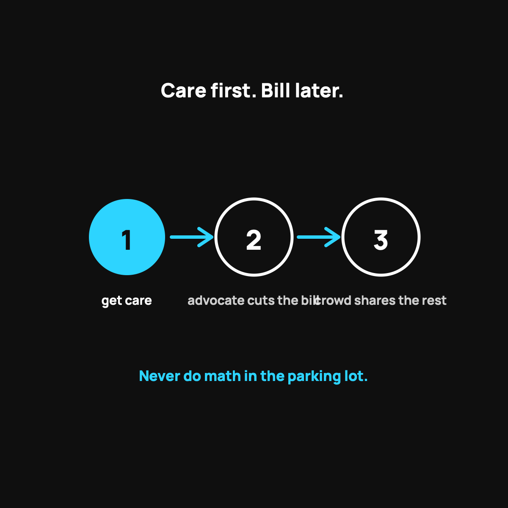

Health Sharing and the ER
Get care first, sort the bill later. Exactly what the model is built for.
In a real emergency on health sharing, go to the ER. Don't stand in the parking lot doing math. Afterward it's treated like any health event: you pay your $500 member commitment, your care advocate negotiates the inflated ER bill down to the cash price and lower, and the community shares the rest, usually within about a week.

The emergency room is the scenario that makes people nervous about leaving traditional insurance. It's the middle-of-the-night, no-time-to-think situation. So let me answer the question head on: what actually happens if you're on health sharing and you have a real emergency? The short version is comforting, and the details are worth knowing before you ever need them.
Rule one: in an emergency, get care. Period.
This is the most important thing I can tell you, so I'll put it plainly. If it's a real emergency, go to the ER or call for help. Do not stand in the parking lot doing math. Do not hesitate because you're worried about a bill. Your health comes first, always, and health sharing is built with that assumption baked in.
Nobody, on any kind of coverage, should be gambling with a heart attack or a bad accident to save money. Get the care. Sort the paperwork later. That's the whole order of operations.
What happens with the bill afterward
Once you're safe and stable, a real emergency is treated as a health event, the same as any other. Here's the flow:
- You'll pay your $500 member commitment for the event.
- Your care advocate goes to work on the ER and hospital bills, negotiating them down to the cash price and lower. ER bills are notoriously inflated, so this step often saves a lot. I wrote about what advocates do.
- The community shares the rest of the eligible cost, usually funding a complete submission in about a week.
So the scary ER bill gets attacked and shrunk, then shared, just like a broken arm or an appendix. The emergency being an emergency doesn't change the basic machinery.
A couple of practical tips
Two things that make the aftermath smoother:
- Keep your $500 liquid, always, so the event commitment is never a scramble.
- Save every document. The itemized bills, the discharge papers, everything. Complete submissions get funded fastest, so good paperwork is your friend.
That's really it. Get care, keep your cushion ready, save the paperwork, let the advocate fight the bill.
The honest limits
Same as always, because I won't skip them for the scary scenarios. It is not insurance, so there's no legal guarantee, and care that falls outside the guidelines has its own rules. But a genuine emergency is exactly the kind of unexpected, big event the whole model is designed to catch. If there's a situation health sharing is built for, this is it. See the full honest picture of fit.
The takeaway
If you have a real emergency on health sharing, the answer is simple: get care immediately, don't hesitate over money. Afterward, you pay your $500, your advocate negotiates the inflated ER bill way down, and the community shares the rest. Keep your cushion ready and your paperwork complete, and the ER stops being the thing that scares you out of a model that's actually built for exactly this.
Questions I get about this
Will the ER treat me if I don't have insurance?
Yes. Emergency rooms treat you regardless of coverage. You're a cash-pay patient, which often means the bill can be negotiated harder afterward. Get the care first and sort the paperwork later.
Are ER bills eligible for sharing?
A genuine emergency is exactly the kind of unexpected, big event the model is built to catch. Care that falls outside the guidelines has its own rules, so read them, but if there's a situation health sharing is designed for, this is it.
What should I do after an ER visit on health sharing?
Keep your $500 ready, save every document (itemized bills, discharge papers, everything), and submit through the app. Complete submissions get funded fastest, so good paperwork is your friend. Your care advocate handles the fight with the hospital.
Want the peace of mind before you ever need the ER? Use my code NORMAL: check CrowdHealth (opens in a new tab). New members get their first 3 months at $99 a month with code NORMAL.
My family of four uses CrowdHealth and I really believe in the model. If you join through my discount link (opens in a new tab) (code NORMAL), you get your first 3 months at $99 a month, and Normaltown USA earns a referral bonus if you stick around. It costs you nothing extra, and I only refer you to things I would tell a friend about. Health sharing is not insurance, and nothing here is medical, tax, or financial advice.

Written by David Dewese
Normal guy with a full-time job, wife, and kids. Spent twenty years pursuing music and creative ventures before starting a family. Sharing tips and tricks on how to thrive while living on an artist's income. Not a financial advisor. More about me.
New here?
Normaltown USA is plain-English money and healthcare help for normal people, written by a regular guy with a family of four. No jargon, no hype. Start here, or read the FAQ.